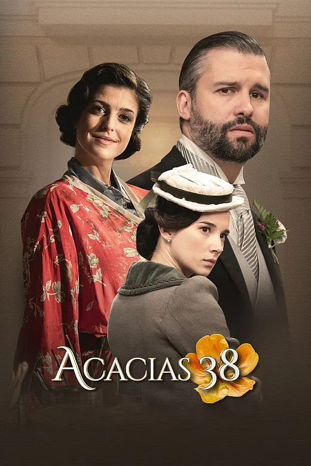

B Personaje principal sáfico pero sexualidad no relevante para la historia, o personaje secundario con cierta relevancia para la historia.
Acacias 38 nos lleva a 1899 para narrar la historia de un grupo de sirvientas y las familias burguesas para las que trabajan. Una historia sobre ricos y pobres que refleja el encuentro de dos mundos. La trama sáfica se desarrolla de forma independiente en la temporada 5.
Esta obra tiene 5 avisos de contenido. En la ficha completa están ocultos hasta que decidas verlos, para no destriparte nada.
- Género
- Drama
- Dirección
- Aurora Guerra
- Reparto
- Aria Bedmar, Ylenia Baglietto
- Temporadas
- 5
- Edad recomendada
- 7+
- Dónde verla
- RTVE Play